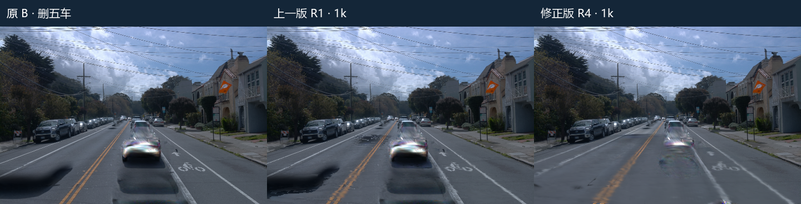
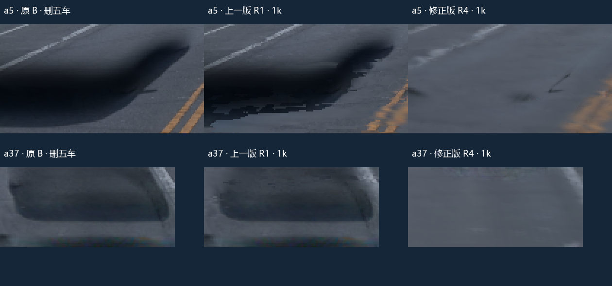
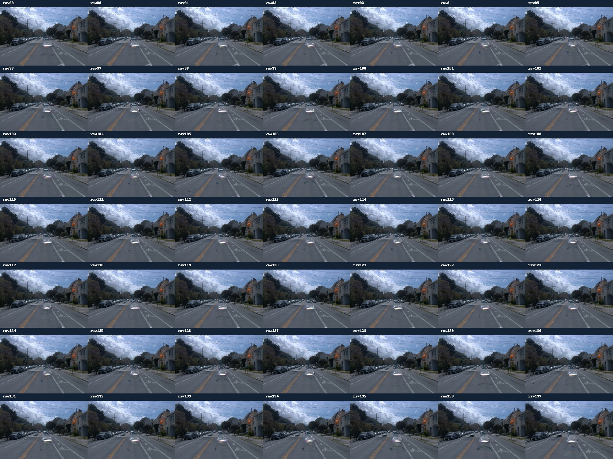
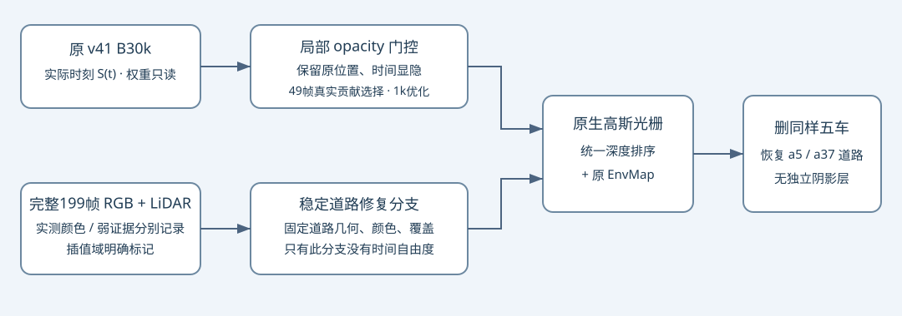

scene-008 · a5 / a37 去影修正版
2026-11-03 · 远端原生 v41 B30k · 完整199帧道路证据 · 删除 a5/a26/a18/a6/a37
上一版确实存在工程错误。修正后，raw105 的 a5/a37 大块车底黑影明显消退。沿用上一版固定有效参考域，阴影代理 MAE 分别降至 0.00870 / 0.01069。旧 a5 历史结果也已零更新精确重放。道路仍有少量纹理和边缘残留，中央车形彩色残影尚在；不能宣称删五车的全部静态外观都已清除。
直接看 raw105


同一相机、时刻、删车集合。上一版 R1 保留原结果，没有覆盖。a5 左侧大块暗影和 a37 近处车底暗块是本次重点；中央车形残影属于仍存在的问题。
已经坐实的bug
其他车辆保护域重新覆盖了待删车辆。旧定义先用 all_vehicles & labels==0 扣掉待删五车，再对身体/边缘掩码做形态膨胀；本实验又把它直接当作“其他车辆”保护域。最终49帧中，与待删五车标签重叠达 136,840 个像素样本。raw105 的 (40,280) 明明标签为 a5，却被要求维持原 B 的黑色外观。修正后重叠为0，并为选中车的边缘留出缓冲。该缓冲仍是编辑启发式，不是精确语义真值。
恢复道路和保持原图的损失相互冲突。把参考资格不足、保护掩码中的小孔都当作范围外，会迫使恢复道路透明化。R3 在 raw105 的 (60,275) 道路独立alpha被优化到约0.00494；在参考道路应覆盖的地方，实际上又露回了旧残影。最终版将“允许修复的连贯道路范围”与“哪些像素有可信颜色监督”分开，并固定恢复道路的颜色及覆盖，使其不能通过消失来满足错误锚定。
旧路径迁移还有遗漏。R1 只学习新增道路，没有接入旧方法的残影 opacity 优化，还使用硬输出路由；R2 又只在单个锚帧选高斯，覆盖不了原生 B 各时刻的贡献者。最终版从原生49帧的真实光栅 alpha·T 选出480,282行局部门控，只乘原模型当前时刻的opacity，不强制原静态高斯跨时刻显现。掩码与选择原始收据 · R3零更新像素检查
以上属于本次迁移和实验接线错误。各项修正的独立收益没有单独做消融；这些门控不是“车辆/道路归属真值”，不能拿来证明归属分类问题已经解决。边缘膨胀后不相交、目标道路覆盖不消失，是后续入口必须核验的具体条件。
固定口径的结果
| 对象 | 阴影 MAE · B → R4 | 下降 | 有效分母 | 道路 MAE · B → R4 |
|---|
| a5 | 0.08083 → 0.00870 | 89.2% | 18/49帧 · 3,712样本 | 0.02906 → 0.00844 |
| a37 | 0.07945 → 0.01069 | 86.5% | 49/49帧 · 20,813样本 | 0.02955 → 0.01040 |
线性RGB、按像素样本加权，使用与R1相同的强参考及阴影代理掩码。a5有18个有效阴影帧，a37有49帧，空参考不计为0；全部有效帧均改善。a5道路域25帧，其余无有效分母。所有199帧均为BUILD输入，49个梯度相机属于这些输入，不是独立测试集。
| 版本 | a5 阴影 MAE | a37 阴影 MAE |
|---|
| 原 B | 0.08083 | 0.07945 |
| R1：错误迁移 | 0.04847 | 0.06099 |
| R2：原生选择迁移 | 0.06064 | 0.03994 |
| R3：修复覆盖，保护掩码仍有冲突 | 0.03467 | 0.01254 |
| R4：最终修正 | 0.00870 | 0.01069 |
此表各版使用同一原生 B、同一固定代理指标。历史旧 a5 的0.00665316来自更早的915,840行静态模型，原生 B有2,022,726行，不能将两者当成同权重同口径实验。原生 raw105 的 a5阴影MAE为0.07821 → 0.00597，a37为0.07060 → 0.01167。
按帧等权而非像素加权，最终阴影 MAE 为 a5 0.01580、a37 0.02010。a5最差raw113为0.03382但只有1个有效像素；a37最差raw91为0.03068、61像素。查看完整分母比只报汇总更重要。全部逐帧原值 · 完整执行与汇总
完整49帧同步检查
原 B · 删五车 修正后 R4 · 删五车
修正后 R4 · 删五车
49帧总览

199帧证据与时间约束

两车道路证据都检索了 raw0–198 共199帧。最终26,489个恢复格点中，21,068格有至少3个颜色一致的真实观测（含原强资格18,773格、短跨度2,295格）；另5,421格使用8邻域空间插值，最近实测点≤1.2m且局部线性RGB范围<0.10。插值格明确标记，未用于实测真值指标。8,648个几何范围内格点仍未获得恢复资格，没有假称全路面已观测。原生B相机与时间支持仍为raw89–137的49帧。
只稳定道路恢复分支。固定 raw105 相机，切到raw89/105/137时间，道路自身RGB最大差均为0；原静态RGB相对首时刻仍变化0.033073 / 0.040060。原模型的位置、时间显隐沿用实际时刻，四份原始权重不写回；关闭插件逐像素复原B（最大差0）。无独立阴影层，无图像硬路由。
修复范围外相对当前 B 的sRGB平均MAE为0.001375，最差帧均值0.001637；修正后“其他车辆”域平均MAE为0.001469。由于高斯支撑跨边界，这里不是严格零变化。时间/旁路核验 · 最终执行合同
复现与计算记账
旧a5的原始checkpoint与addon零更新重放：期望和实际 MAE 均为 0.006653157528489828，差值0；其权重不是v41 B。精确复现原值。
最终R4正式优化1,000步，约129.1秒。按用户要求无smoke；旧结果重放、诊断与恢复验收均0更新。此前R1/R2/R3各1,000步均保留，合计实际优化4,000步，不能把工程试错隐去或称为只计算一次。最终只训练原静态opacity门控；原B只读，道路几何/颜色/opacity固定。
保存的Adam步数为1,000；新进程恢复修复参数、优化器与全部随机状态后，raw101/105/113 PNG逐字节一致，49帧视频完整解码。训练CUDA分配峰值4.06GiB、保留11.53GiB，整个监测窗口NVML峰值19.77GiB（含进程交接期间的重叠）。人工 verdict 保持空，quality_accepted=false，供用户验收。
最终addon checkpoint · 逐步日志 · 完整恢复收据 · 全部入口源码 · R2/R3/R4完整快照已另行保存在用户本地与远端（约478MiB）
快照已在本地与远端保留，包含真实199帧派生数组、49帧资格图、各次checkpoint、结果和失败现场。仍依赖原始B四份权重、旧历史模型（仅历史重放）、V3坐标bundle及原场景输入。R1完整快照已单独取回。本报告独立存放，不覆盖旧诊断平台或badcase表。
远端最终目录：/root/autodl-tmp/drivingeditor_repro/campaign/shadow_a5_a37_199_20261103_r4
完整快照 SHA256：8dc9be0b971a461c1f6821bc788306079dcf03e802556d95512261d6ed2e3b00failure_ledger_refs=[V82-F01,V82-F06]；failure_ledger_delta=none。此次结果说明修复覆盖、保护域接线、跨时刻贡献覆盖会直接决定去影结果，没有证明仅靠身份重标注即可解决。